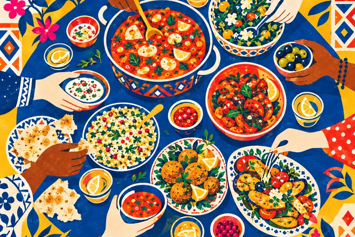
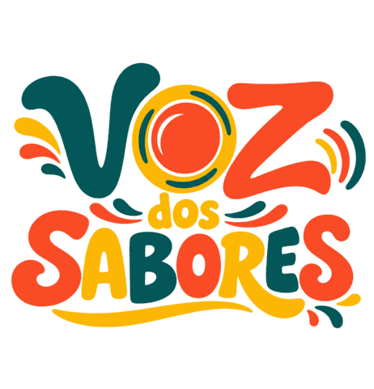
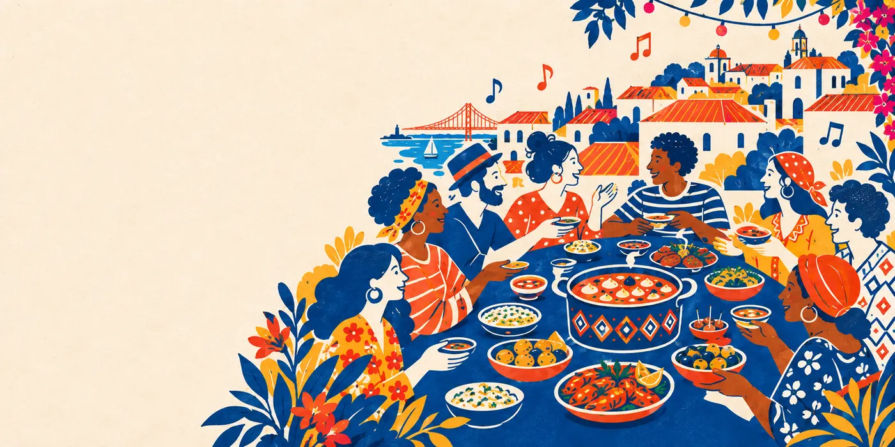
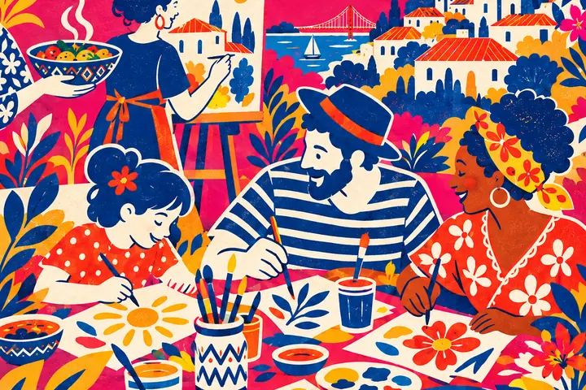
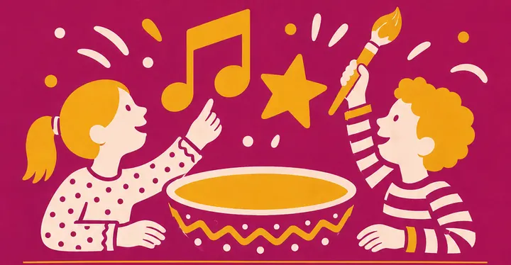
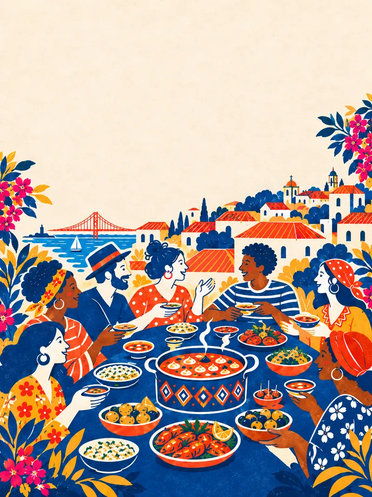

Sabores do mundo
Projetos gastronómicos de diferentes países trazem as suas receitas, histórias e formas de receber à mesa.

17 out 2026 · Lisboa
Um dia para descobrir sabores de diferentes países, ouvir música, criar, dançar e conhecer as pessoas que fazem parte de Lisboa. O Voz dos Sabores junta projetos gastronómicos, artistas e comunidades num festival de entrada livre.

A comida conta histórias de lugares, famílias e viagens. No Voz dos Sabores, essas histórias encontram-se com música, arte e pessoas de diferentes comunidades. Queremos criar um espaço aberto onde seja fácil provar algo novo, conversar e sentir Lisboa um pouco mais próxima.
A gastronomia é o ponto de encontro. A comunidade é o que queremos construir.

Projetos gastronómicos de diferentes países trazem as suas receitas, histórias e formas de receber à mesa.
Música ao vivo e DJ acompanham o festival ao longo do dia. O programa detalhado será divulgado nos nossos canais.

Um espaço artístico convida jovens e adultos a experimentar, criar e fazer parte do ambiente do festival.

Estamos a preparar atividades para as crianças. Acompanha as nossas novidades para conheceres os detalhes.
Estamos a reunir 16 projetos gastronómicos ligados a diferentes países. Por detrás de cada banca há pessoas, receitas e histórias que vale a pena conhecer. À medida que os participantes forem anunciados, vais encontrá-los aqui e no nosso Instagram.
Conhece os projetos no InstagramEntre sabores, música e atividades, queremos que cada pessoa encontre o seu lugar no festival.
Programa em atualização. Segue-nos no Instagram para conheceres as novidades.
O festival acontece na Voz do Operário, em Lisboa. Guarda a morada e vem passar o dia connosco.
Projetos gastronómicos, artistas, associações, instituições e marcas podem ajudar-nos a dar mais espaço às culturas que fazem parte de Lisboa. Se tens uma ideia de colaboração ou queres saber mais sobre o projeto, escreve-nos.
Falar com a organizaçãoEsta é a primeira edição do Voz dos Sabores. Queremos que os encontros e as parcerias que nascem aqui possam continuar em futuras edições.
Estamos a trabalhar na possibilidade de realizar até seis edições em 2027. As datas e os formatos serão anunciados quando estiverem confirmados.

No sábado, 17 de outubro de 2026, das 12h00 às 22h30.
Na Voz do Operário, Rua da Voz do Operário 13, 1100-621 Lisboa. A entrada do festival é pela Tv. de São Vicente 7.
Não. A entrada no festival é gratuita.
Sim, estamos a preparar atividades para os mais pequenos. Acompanha as nossas novidades para conheceres os detalhes.
Escreve para vozdossabores@gmail.com ou acompanha-nos no Instagram, @vozdossabores.
Vem com fome de descobrir. Fica pela música, pelas pessoas e pelas histórias.